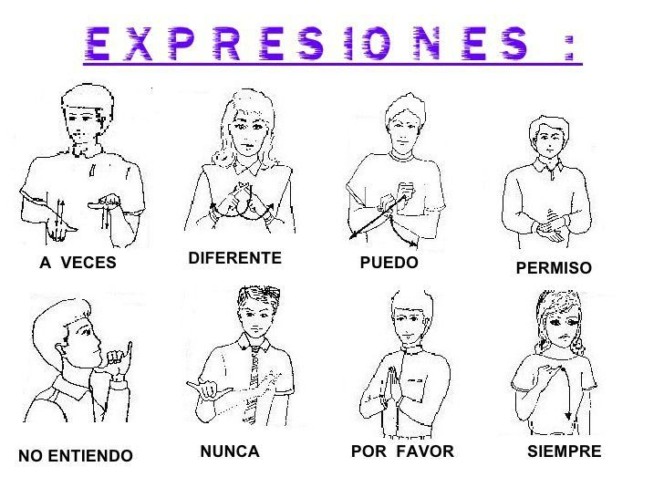
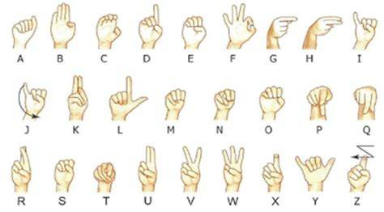

La Lengua de Señas: Una Lengua Completa
La lengua de señas es un sistema de comunicación visual y gestual utilizado por personas sordas. Cada gesto, movimiento de manos, expresión facial y postura corporal tiene significado, permitiendo expresar ideas, emociones y pensamientos complejos sin necesidad de sonido.
No es una traducción literal del español, sino una lengua con su propia gramática y vocabulario. Por ejemplo, en la Lengua de Señas Venezolana (LSV), el orden de las palabras puede diferir del español, y ciertos conceptos se expresan con signos únicos que no existen en la lengua oral.
Su aprendizaje fomenta la inclusión y la igualdad, ya que permite que las personas sordas puedan acceder a la educación, la cultura y la vida social de manera plena. Además, mejora la comunicación entre sordos y oyentes cuando todos conocen los fundamentos de la lengua de señas.
Existen cursos presenciales y en línea, así como aplicaciones interactivas que enseñan lengua de señas de manera didáctica, incluyendo videos y ejercicios prácticos. Esto facilita que niños, jóvenes y adultos puedan aprender a comunicarse visualmente.
Fomentar el uso de la lengua de señas en la sociedad no solo rompe barreras de comunicación, sino que también contribuye a una cultura más empática y respetuosa de la diversidad.
(VIDEO INFORMATIVO)
Lenguaje de señas
El lenguaje de señas es una forma de comunicación visual que utilizan las personas sordas o con discapacidad auditiva para expresar ideas, emociones y necesidades sin usar la voz. Aprenderlo no solo facilita la comunicación con personas sordas, sino que también fomenta la inclusión y la empatía.
Para empezar a practicar, colócate frente a un espejo o junto a otra persona y repite las señas elementales. La práctica constante ayuda a que los movimientos de las manos y la expresión facial se integren naturalmente, lo que es esencial para que la comunicación sea clara y efectiva.
Señas más utilizadas
Algunas de las señas más comunes:
Abecedario del lenguaje de señas
El abecedario manual es fundamental para deletrear nombres, lugares o palabras que no tienen una seña específica. Aprenderlo permite complementar la comunicación y ayuda a familiarizarse con los movimientos de las manos y la coordinación visual.
Consejos para aprender lenguaje de señas
- Practica todos los días aunque sea por unos minutos; la repetición es clave.
- Observa videos o aplicaciones de lenguaje de señas para aprender de forma interactiva.
- Incluye gestos y expresiones faciales; en el lenguaje de señas, la expresión es tan importante como el movimiento de las manos.
- Intenta comunicarte con otras personas para poner en práctica lo aprendido.
El Sonido y su Percepción
El sonido es una vibración que se transmite por medios como aire, agua o sólidos y que normalmente percibimos mediante el oído. Las personas con discapacidad auditiva perciben estas vibraciones de manera limitada o nula, dependiendo de su condición.
Las causas de la pérdida auditiva son variadas: desde factores genéticos, enfermedades, infecciones, lesiones traumáticas o exposición a ruidos intensos y prolongados. Cada tipo de pérdida auditiva requiere estrategias educativas y comunicativas específicas.
Los dispositivos tecnológicos como audífonos y los implantes cocleares permiten a algunas personas recuperar o amplificar la percepción del sonido, ayudando a comunicarse más efectivamente y acceder a información auditiva.
Sin embargo, no todos los sordos utilizan estos dispositivos. Por eso es importante que la sociedad cuente con alternativas visuales y táctiles que permitan transmitir información de manera clara y accesible.
Conocer cómo perciben el mundo las personas sordas nos permite construir entornos inclusivos, diseñar materiales educativos adaptados y promover empatía y comprensión social.
(VIDEO INFORMATIVO)
Origen del Universo
El origen del universo es un tema fascinante que ha intrigado a científicos, filósofos y culturas a lo largo de la historia. La teoría más aceptada es la del Big Bang, que propone que el universo comenzó hace aproximadamente 13.8 mil millones de años a partir de un estado extremadamente denso y caliente.
Tras la explosión inicial, el universo comenzó a expandirse y enfriarse, permitiendo la formación de partículas subatómicas, átomos y, eventualmente, las primeras estrellas y galaxias. Este proceso continúa hasta hoy, con el universo en constante expansión.
La formación de galaxias y sistemas estelares fue un proceso gradual influenciado por la gravedad y la materia oscura. Las primeras estrellas generaron elementos más pesados a través de la fusión nuclear, elementos que hoy componen planetas y seres vivos.
El estudio del fondo cósmico de microondas y la observación de galaxias lejanas permiten a los científicos reconstruir la historia temprana del universo y comprender mejor su evolución y estructura.
Comprender el origen del universo no solo nos da perspectiva sobre nuestro lugar en el cosmos, sino que también impulsa avances en física, astronomía y tecnología, expandiendo continuamente nuestro conocimiento sobre la realidad que nos rodea.
(VIDEO INFORMATIVO)
El Sistema Circulatorio
El sistema circulatorio es fundamental para la vida, ya que permite el transporte de sangre, nutrientes, gases y desechos a través del cuerpo. Está compuesto principalmente por el corazón, los vasos sanguíneos y la sangre.
El corazón funciona como una bomba que impulsa la sangre por arterias, venas y capilares, asegurando que cada célula reciba oxígeno y nutrientes mientras elimina dióxido de carbono y productos de desecho.
Existen dos tipos de circulación: la pulmonar, que lleva la sangre a los pulmones para oxigenarse, y la sistémica, que distribuye la sangre oxigenada a todo el cuerpo. Este proceso constante es vital para el mantenimiento de la vida.
El buen funcionamiento del sistema circulatorio depende de hábitos saludables como una alimentación equilibrada, ejercicio regular y evitar sustancias nocivas como el tabaco, que pueden afectar la presión arterial y la salud del corazón.
El estudio del sistema circulatorio también ha permitido desarrollar tratamientos médicos avanzados, como cirugías cardíacas, medicamentos para regular la presión y tecnología de soporte vital, mejorando la calidad de vida de millones de personas.
(VIDEO INFORMATIVO)
La Tierra y sus Movimientos
La Tierra realiza dos movimientos principales que afectan directamente la vida en nuestro planeta: la rotación y la traslación. La rotación consiste en girar sobre su propio eje, lo que genera el día y la noche y dura aproximadamente 24 horas.
La traslación es el movimiento de la Tierra alrededor del Sol, que tarda alrededor de 365 días y da lugar a las estaciones del año debido a la inclinación del eje terrestre. Este movimiento afecta el clima y la duración de los días y las noches a lo largo del año.
Además, la Tierra experimenta movimientos secundarios como la precesión y la nutación, que alteran lentamente la orientación de su eje y contribuyen a cambios climáticos a largo plazo y a la ubicación de las estrellas en el cielo.
Estos movimientos son fundamentales para la vida, ya que regulan los ciclos de luz y temperatura que influyen en los ecosistemas, la agricultura y los patrones climáticos, creando un equilibrio natural en el planeta.
El estudio de los movimientos terrestres también permite a la humanidad comprender fenómenos astronómicos, desarrollar calendarios precisos y mejorar la navegación, demostrando la importancia de la observación científica en nuestra vida diaria.
(VIDEO INFORMATIVO)